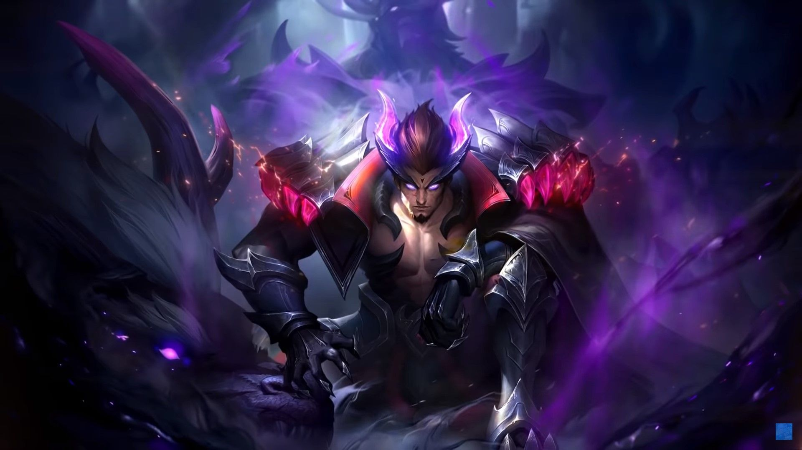

|  | |
|
Чонг
|
|
|
Чонг - герой класса боец. Его особенностью является перевоплощение в форму дракона.
|
|
"Справедливость...какое красивое слово чтобы обмануть слабака"
-Чонг |
 |
Дата выхода: - 19 июня 2020 года |
|
| История героя: | |
| В восточном мире, полном жизни, древний и могущественный Великий Дракон укрывает весь континент, чтобы его народ мог хорошо жить в этом раю свободы. В звездную ночь метеорит проносится по небу, и Великому дракону в алтаре драконов вдруг становится не по себе. “Черный Дракон хотел уничтожить алтарь Дракона и господствовать над Речными землями Кадии” чередование лет принесло мстителя в пророчестве, и Речные земли Кадии столкнутся с беспрецедентной катастрофой. В отдаленной запретной области Души Дракона обратная шкала, запечатанная на протяжении тысячелетий, наконец привлекла Повелителя перевоплощений. Память о прошлой жизни и судьба этой жизни подобны драме, которая продолжает течь через ум Чонга, и огромное количество энергии начинает течь через его тело. Затем Чонг медленно открыл глаза. Он уже вспомнил свою предыдущую жизнь и начинает постепенно восстанавливать свои силы. Сила, идущая от обратной шкалы, продолжает хлестать. Поглощая эту желанную силу, Чонг погружается в воспоминания: педантизм и консерватизм своего учителя; глупость и трусость своего младшего ученика; а затем Скрытая угроза за этой, казалось бы, мирной эпохой. Он не может удержаться от смеха. Более десяти лет спустя приречные Земли Кадии не становились сильнее под предводительством великого дракона. То, что принесло подъем Южной Бездны и восстановление сил зла, – это грядущий огонь войны. Драка может вспыхнуть в любой момент. Кадия Риверленд, всегда почивающая на лаврах, так мала и полна опасностей. Чонг шаг за шагом поднимается по ступеням алтаря, и с каждым шагом его сила становится все сильнее. Обратная шкала постепенно пожирает его тело, но он не выказывает никакого страха. Вместо этого он наслаждается болью и мучениями, хотя он ясно знает, что древний Черный Дракон на обратной шкале будет контролировать его сознание. Тело Чонга начинает мутировать. Чешуя пронзила его плоть и дико выросла. Он чувствует, что его внешний вид меняется медленно, но две силы в его теле все еще не могут быть объединены органично. Усиливающаяся боль почти разрывает тело Чонга на части, и его сознание было разъедено обратной шкалой и исчезло. Но Чонг все еще настаивает. Он знает, что то, чего ему не хватает, скоро придет. В непрерывном разрыве он начинает терять сознание, и хлещущая сила превращает запретную область Души Дракона в руины. В его момент, во имя Великого Дракона, восточные бойцы, пришедшие остановить Чонга, также прибыли. Теперь все знают, что если Черный Дракон не будет остановлен от воскрешения, то Речные земли Кадии столкнутся с неизбежной катастрофой. Однако Ло и, который лежит в засаде, использует круг Ло Инь Ян, чтобы заманить в ловушку Цзилуна и других. Только Тан Вань Ван спасается от этого благодаря своим ловким движениям тела. Чонг вот-вот полностью подчинится сознанию Черного Дракона в полном объеме и впадет в безумие. В этот критический момент Ван ван вынимает некогда принадлежавший Чонгу сувенир, который является изначальным духом с тусклым блеском. Ван ван никогда не сомневался в истинной природе Чонга. Она твердо верит, что Чонг не так уж отвратителен, как все думают, и его разум был поглощен обратной шкалой. Пока изначальный дух возвращается, Чонг может вернуться к тому, чем он был раньше. Она бросается к Чонгу, который неуправляем и безумен, с изначальным духом, и помещает его в тело Чонга После сильного света он начинает восстанавливать свое здравомыслие и также узнал взрослого Тан Вань Вана. Чонг поворачивается к Ван-Вану, который выжидательно смотрит на себя. В его глазах появляется сложный взгляд. К всеобщему удивлению, Чонг не изгоняет из своего тела обратную шкалу, а полностью сочетает в себе изначальный дух и его. Придя в себя, Чонг не только не дал древнему Черному Дракону поглотить его собственное сознание и овладел всей силой обратной шкалы, но и может трансформироваться между двумя формами дракона и человека и стать настоящим свирепым драконом. Все это на самом деле часть его плана. Он воспользовался добротой и простотой Ванван, чтобы позволить ей сохранить изначальный дух, который мог решить его судьбу, и в этот момент завершил все свои планы, воспользовавшись ее безоговорочным доверием. Обратная шкала возвращается, и появляется черный дракон. У него больше нет слабостей, и единственной целью для него является установление гегемонии. Он взмывает в небо в форме черного дракона. Глядя вниз на эту древнюю землю, он хочет опрокинуть все устаревшие порядки и сделать Речные земли Кадии сильными и богатыми на его пути. Ло и безумно смотрит на черного дракона, летящего в небе. Она знает, что ее давнее заветное желание наконец сбылось и наступает новая эра. Мир будет помнить только имя того, кто силен, и не будет спрашивать о его первоначальном намерении. Он завоюет все земли Приречья Кадии и будет ждать финального поединка с Великим драконом. | |
Слабые и сильные стороны: Слабые:
Cильные:
Сборка героя:
Эмблемы
Выбор линии:
Так, как Чонг - боец, он отправляется либо на верхнюю, либо на нижнюю линию.
Пассивное: Проклятое касание
Чонг наносит на цель Частицу Ша каждый раз, когда наносит урон врагам и одновременно собирает Эссенцию Ша.
Частица Ша извергается при достижении 5 зарядов, потребляя 1 заряд каждые 0,25сек. Каждое поглощение заряда наносит 40(+30% доп.физ.атаки)+2% от потерянных ОЗ цели как Физический Урон, восстанавливая 6% от его потерянных ОЗ и получая 8 эссенции Ша для Чонга.
Когда Эссенция Ша полностью заряжается, Чонг получает 30% Скорости передвижения и 20% Вампиризма от навыков.
1 Навык: Хвост Дракона
Чонг совершает круговой удар нанося 200(+100% доп.физ.атаки) единиц Физического урона. Заоостренный край наносит 250% урона и 2 заряда Частицы Ша.
2 Навык: Захват Души
Чонг высвобождает Душу Дракона, нанося 150(+120% доп.физ.атаки) единиц Физического урона всем врагам перед собой и замедляя их на 60% на 1сек. После попадания по цели следующая базовая атака будет усилена и нанесет 108(+100% физ.атаки) единиц Физического урона.
3 Навык: Яростный прыжок
Чонг прыгает в определенную область, нанося 180(+90% доп.физ.атаки) единиц Физического урона. После короткой задержки враги в зоне действия будут подброшены в воздух на 1сек и получат 180(+90% доп.физ.атаки) Единиц Физического урона.
Ультимативная способность: Форма дракона
Чонг превращается в Черного Дракона и начинает подготовку. Он игнорирует препятствия и получает иммунитет к контролю на 7сек. После выхода из формы дракона, Чонг принимает форму драгоноида на 10сек и увеличивая радиус всех своих навыков.
|